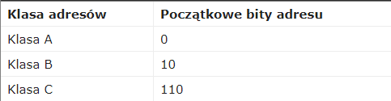
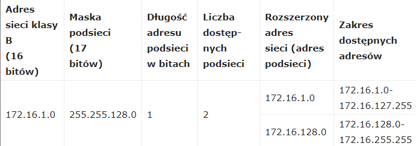
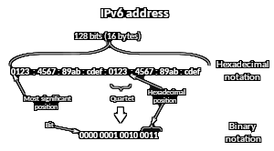
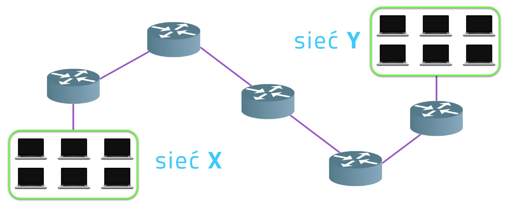

ADRESOWANIE IP
Początkowo schemat adresacji IP zakładał sztywny podział na klasy. Klasa A umożliwia zaadresowanie 16 milionów unikalnych hostów, klasa B obejmuj 65 tysięcy adresów, natomiast najmniejsza klasa C umożliwia stworzenie sieci składającej się z 254 hostów. Adresy sieci klasy A są już niedostępne, organizacja InterNIC zaprzestała też przydzielania adresów sieci klasy B. Najwięcej jest adresów sieci klasy C, jednak ich wadą jest stosunkowo mała liczba adresów dostępnych w ramach pojedynczej sieci klasy C. Adres IPv4 składa się z 32 bitów podzielonych na dwie części: pierwsza identyfikuje sieć, natomiast druga konkretne urządzenie w danej sieci. Pierwsza część adresu określa jednocześnie klasę adresową, co wyjaśnia poniższa tabela.
Jak pokazuje powyższa tabela, dopóki nie wprowadzono rozwiązania CIDR (Classless Inter-Domain Routing), sam adres IP wystarczał, aby określić na potrzeby routingu jego przynależność do podsieci.
Adresy klasy A
32-bitowe adresy IP zapisuje się najczęściej jako cztery liczby oddzielone kropkami – każda odpowiada jednemu bajtowi adresu. Dlatego adresy klasy A będą należeć do przedziału od 1.0.0.0 do 126.0.0.0 (adresy 0.x.x.x i 127.x.x.x są zarezerwowane). Liczba urządzeń, które można zaadresować w pojedynczej sieci klasy A wynosi dokładnie 16 777 214 (adresy x.0.0.0 i x.255.255.255 są zarezerwowane). W praktyce nikt nie podłącza 16 milionów urządzeń do jednej sieci. Administratorzy tak dużych sieci dzielą je na mniejsze sieci, zwane podsieciami. W ramach każdej sieci klasy A można utworzyć 65 534 podsieci (numery sieci 0.0 oraz 255.255 są zarezerwowane), z których każda może liczyć 254 urządzenia (adresy urządzeń 0 i 255 są zarezerwowane). Uzyskuje się to poprzez podzielenie części adresu IP wskazującej na urządzenie (jest to druga, 24-bitowa część adresu IP klasy A) na 16 bitów adresu podsieci oraz 8 bitów służących do adresowania urządzeń.
Adres klasy B
Dwa pierwsze bity adresu klasy B to 1 i 0, a następne 14 bitów identyfikuje sieć. Ostatnie 16 bitów służy do adresowanie urządzeń końcowych. Dlatego adresy sieci klasy B należą do przedziału od 128.1.0.0 do 191.254.0.0, a każda z tych sieci oferuje 65 534 adresy IP dla urządzeń końcowych. Podobnie jak w przypadku adresów klasy A, również część adresu klasy B służącą do adresowania urządzeń końcowych można podzielić na dwie części:
- adres podsieci
- adres urządzenia końcowego
Przykładowo, adres klasy B można podzielić na 8 bitów adresu podsieci i 8 bitów adresu urządzenia końcowego. Taki sposób podziału adresu klasy B pozwala na stworzenie 254 podsieci, z których każda może składać się z 254 urządzeń.
Pozostałe klasy adresów
Trzy pierwsze bity adresu klasy C to 1, 1 i 0, natomiast kolejne 21 bitów identyfikuje sieć. Ostatnie 8 bitów adresów służy do identyfikacji urządzeń końcowych. Adresy sieci klasy C należą do przedziału od 192.0.1.0 do 223.255.254.0, a w każdej sieci może być do 254 urządzeń. Na koniec, są jeszcze klasy adresów D i E. Klasa D zaczyna się od 224.0.0.0, a adresy należące do tej klasy służą do transmisji typu multicast. Adresy klasy E zaczynają się od 240.0.0.0 i obecnie są wykorzystywane tylko do celów eksperymentalnych.
Maska Podsieci
Zanim przejdziemy do omówienia maski, musimy jeszcze określić typy adresów, które związane są z każdą siecią, są nimi:
adres sieciowy (ang. network address) -adres, który określa całą sieć,
adres rozgłoszeniowy (ang. broadcast address) – specjalny adres używany w celu wysyłania danych do wszystkich hostów w określonej sieci,
adres hosta (interfejsu urządzenia końcowego) – adres przyporządkowany urządzeniu końcowemu pracującemu w sieci.
Maska podsieci służy do określenia, która część adresu IP jest adresem sieci i podsieci, a która część adresem urządzenia końcowego. W efekcie adres IP jest dzielony na trzy część: adres sieci, adres podsieci oraz adres urządzenia. Maska podsieci to 32-bitowy ciąg, który składa się z ciągu jedynek (wskazują na część adresu IP będącą adresem sieci i podsieci) i następującego po nim ciągu zer (zera wskazują, że ta część adresu jest adresem urządzenia końcowego). Często zapisuje się maskę podsieci w ten sam sposób, co adresy IP. Najlepiej wyjaśnić to na przykładzie. Bardzo popularna maska podsieci w zapisie binarnym to:
11111111 11111111 11111111 00000000
Co w bardziej czytelnej formie zapisuje się jako:
255.255.255.0
Trzeba jednak podkreślić, że maska podsieci nie jest adresem IP, choć funkcjonuje tylko w powiązaniu z adresami IP. Poprawna maska podsieci musi zaczynać się od bitu o wartości „1”, a kończyć się bitem o wartości „0”.
Tabela z maskami podsieci i ich binarnymi skrótami:

Adresy ipv6
W protokole IPv6 adres zapisany jest w 128-bitowej liczbie i może identyfikować jeden bądź wiele interfejsów. W przypadku tego protokołu adres jest bardziej przejrzysty niż adres w poprzedniej wersji protokołu. W przeciwieństwie do poprzedniej wersji protokołu, zakres adresu, czyli obszar jego widoczności, jest ograniczony przez odpowiedni prefiks. Adres zazwyczaj zapisuje się jako osiem 16-bitowych bloków zapisanych w systemie szesnastkowym oddzielonych dwukropkiem. Dozwolone jest pomijanie początkowych zer w bloku, a także pominięcie jednego ciągu bloków składających się wyłącznie z zer. Pominięte bloki zer oznacza się podwójnym separatorem bloków (dwukropek). Dopuszczalny jest tylko jeden podwójny dwukropek "::" w adresie.
Zakresy adresów
Charakterystyczną cechą protokołu jest fakt, że zostały zdefiniowane zakresy adresów. W przypadku adresów unicastowych wyróżniane są następujące zakresy:
adresy lokalne dla łącza (link-local address) – są to adresy wykorzystywane tylko do komunikacji w jednym segmencie sieci lokalnej lub przy połączeniu typu point-to-point. Routery nie przekazują pakietów z tego rodzaju adresem. Z puli pozostałych adresów wyróżniane są przez prefiks FE80::/10. Każdy interfejs musi mieć przydzielony co najmniej jeden adres lokalny dla łącza, nawet jeżeli posiada adres globalny lub unikatowy adres lokalny.
unikatowe adresy lokalne (unique local address) – są to adresy będące odpowiednikami adresów prywatnych wykorzystywanych w protokole IPv4. Z puli pozostałych adresów wyróżniane są przez prefiks FC00::/7. Od adresów lokalnych łącza odróżnia je także prefiks routingu.
adresy globalne (global unicast address) – widoczne w całym internecie, są odpowiednikami adresów publicznych stosowanych w IPv4; do adresów tego typu należą adresy nie wymienione w pozostałych punktach. Przez pewien czas, protokół definiował adresy site-local address, identyfikowane przez prefiks FEC0/10, jednak, ze względu na wiele kontrowersji zostały uznane za przestarzałe.
ADRESOWANIE IPV4
Jednym z kluczowych zadań warstwy sieci jest adresowanie. Adresowanie w sieciach IP jest bardzo podobne do adresowania stosowanego przez nas, ludzi. Oczywiście tylko na poziomie logicznym, mechanizmy adresowania są różne. Hosty w sieciach zostały pogrupowane w celu łatwiejszego nimi zarządzania i adresowania.
Podobnie jak u ludzi, też mieszkamy w miastach, na konkretnych ulicach. Dzięki temu wspomniana wcześniej paczka od cioci z Ameryki łatwo mogła dotrzeć do odbiorcy. Najpierw została wysłana promem do Polski, potem ciężarówką do Twojego miasta, następnie mniejszym autem pod wskazaną ulicę i numer domu. Bardzo podobnie jest z adresowanie hostów. Pakiet przesyłany pomiędzy sieciami, najpierw trafia do sieci, do której przynależy host, a potem przesyłany jest już do konkretnego hosta. Ten typ adresowania nazywany jest adresowaniem hierarchicznym, bo najpierw doczytywane są informacje ogólne, czyli w przypadku przesyłania danych adres sieci, potem dopiero te szczegółowe, czyli adres IP konkretnego hosta.
W sieciach komputerowych hosty mogą się ze sobą komunikować na trzy sposoby:
z wykorzystaniem transmisji pojedynczej (ang. Unicast);
poprzez rozsyłanie grupowe (ang. Multicast);
poprzez rozgłaszanie (ang. Broadcast);
Transmisja typu unicast stosowana jest najczęściej, wykorzystywana jest w typowych połączeniach pomiędzy dwoma hostami. Przykładowo, kiedy klient wysyła żądanie do serwera, wykorzystuje do tego właśnie transmisje unicast.
Zastosowanie transmisji grupowej, czyli multicast w znacznym stopniu pozwala zredukować zużycie pasma w sieci ponieważ nie wysyła się pojedynczych pakietów do wielu hostów, tak jak byłoby to realizowane z użyciem transmisji pojedynczej, lecz wysyła się jeden pakiet, który trafić może do wielu odbiorców jednocześnie.
Broadcast, czyli rozgłaszanie, polega z kolei na wysyłaniu pakietów do wszystkich hostów w danej sieci. Wykorzystywany jest do tego specjalny adres, adres rozgłoszeniowy, więc nie jest tak, że w pakiecie IP zapisane są adresy wszystkich hostów w sieci. Byłoby to technicznie nie możliwe, to raz, a dwa transmisję rozgłoszeniową stosuję się na przykład wówczas, kiedy nieznany jest adres konkretnego urządzania. Ten rodzaj transmisji wykorzystywany jest najczęściej w sieciach lokalnych, rzadko zdarza się, że rozgłaszanie stosuje się do komunikacji z hostami spoza danej sieci lokalnej.
W całej puli adresów IPv4 wyodrębniono grupy adresów, tzw. specjalnego zastosowania. Są to adresy, które niestosowane są do komunikacji w sieciach rozległych. Wśród tych adresów specjalnych znajdują się adresy, tak zwanych pętli zwrotnych (ang. loopback). Adres pętli zwrotnej to nic innego jak adres samego siebie, każdy komputer w sieci, oprócz właściwego adresu IP wykorzystywanego do komunikacji, ma przypisany również adres samego siebie, najczęściej jest to adres 127.0.0.1. Ponadto, każdy adres z puli służy do testowania poprawności konfiguracji protokołu IPv4 na hoście.
Innym rodzajem adresów specjalnych, są adresy łącza lokalnego, (ang. Link-local). Tego typu adresy stosuje się wówczas, kiedy host powinien uzyskać adres IP z serwera DHCP, ale ten z jakiś powodów jest niedostępny. Host wówczas przyjmie adres właśnie z puli adresów łącza lokalnego. Transmisja danych z wykorzystaniem takich adresów może odbywać się tylko w obrębie sieci lokalnej, w której pracuje danych host. No i jeszcze jedna, ostatnia już grupa adresów specjalnych, czyli adresy typu TEST-NET. Podobnie jak adresy lokalnego łącza służą one do komunikacji tylko w obszarze sieci lokalnej, stosowane są w celach edukacyjnych. Mogą być wykorzystywane w dokumentacji czy też w przykładach, np. podczas zajęć z sieci. Nie powinny natomiast być używane na stałe.